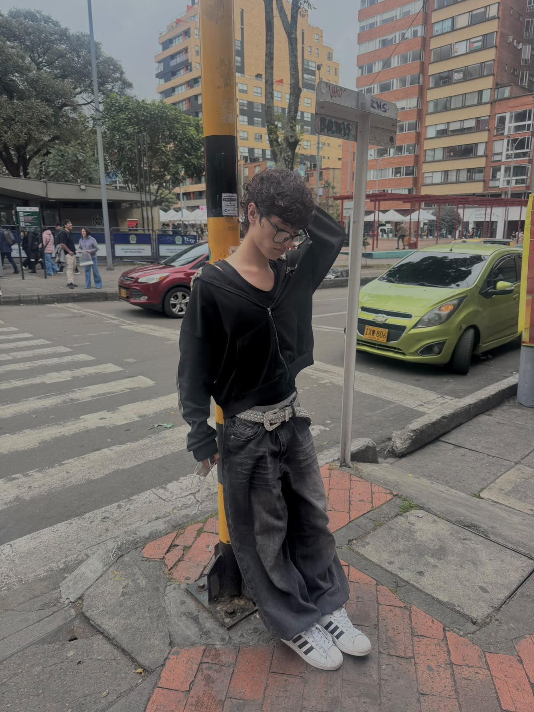
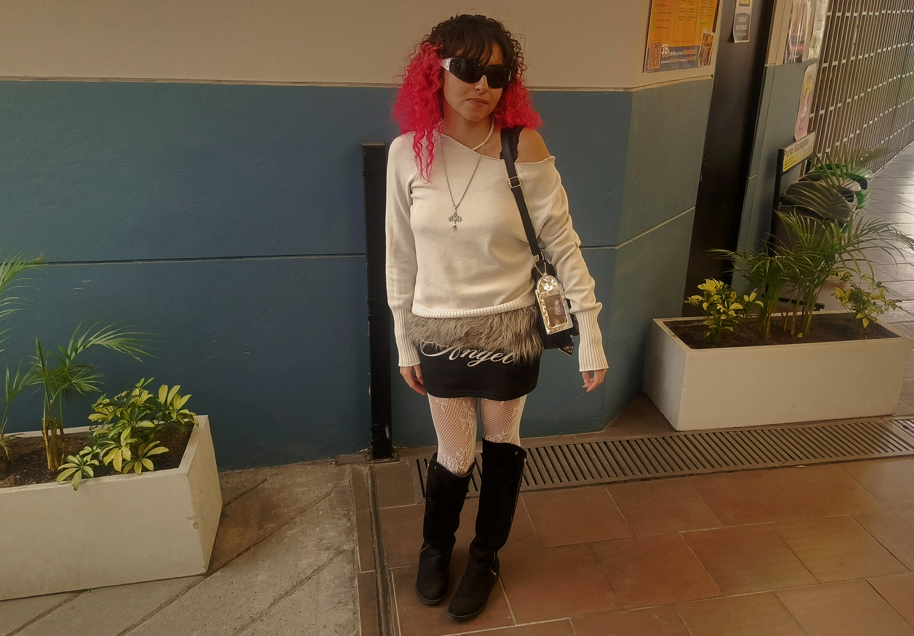

introducción de ensayo Plantear el problema y el contexto de Bogotá antes de mostrar la primera imagen.
1. El asfalto como pasarela: Estilos en la calle
Párrafo sobre cómo la gente se expresa en el espacio público, Transmilenio, el centro de Bogotá etccc

Análisis relacionando la teoría o las lecturas con lo que se ve en la foto anterior.


"Citar entrevista 1" — Nombre, Transeúnte en Chapinero.
Párrafo conectando la entrevista con el escrito

2. Identidad en los campus: La moda universitaria
Texto sobre cómo cambian los códigos de vestimenta dentro del espacio universitario.


Continuar el escrito


3. Moda y expresión en eventos
Parte del escrito sobre eventos, conciertos
4. Arte y Cosplays como forma de vida
Texto sobre cómo la moda y cosplayers en Bogotá que tienen una estética propia. Cosplayers y Moda
"Entrevista no se a quien " — [Nombre], trabajador en Lugar.

Reflexiones finales del texto


conclusion.
Un interrogante por resolver
pregunta final !!